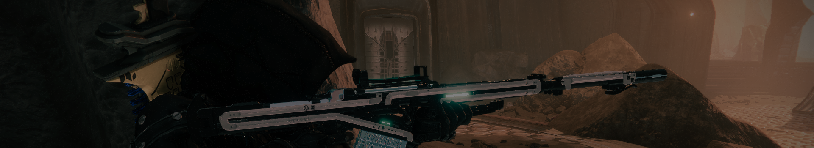

확장팩 안내
확장팩 순서
포세이큰 -> 섀도우 킵 -> 빛의저편
현재 진행 중인 확장팩은 빛의 저편입니다.
DLC 확장팩 소개
포세이큰
- 전용 스토리 미션
- 다양한 추가 장비 이용가능
- 추가 플레이어 능력 개방
- 조각난 왕관 던전
- 마지막 소원 레이드
공식 사이트에서 자세히 보기
섀도우킵
- 전용 스토리 미션
- 다양한 추가 장비 이용가능
- 추가 플레이어 능력 개방
- 이단의 구덩이 던전
- 구원의 정원 레이드
공식 사이트에서 자세히 보기
빛의 저편
- 전용 스토리 미션
- 새로운 시공 능력 개방
- 새로운 행성 유로파 관련 콘텐츠
- 다양한 추가 장비 이용가능
- 딥스톤 무덤 레이드
공식 사이트에서 자세히 보기
확장팩 기간 확인 방법
데스티니 가디언즈를 설치한 플레이어를 기준으로한 설명입니다.
1. Steam 상점 페이지에서 데스티니 가디언즈를 검색합니다.
2. 현재 진행중인 최신 확장팩을 선택해 출시 날자를 확인합니다.
(확장팩 제품은 '데스티니 가디언즈:확정팩명' 으로 되어 있습니다.)
3. 출시 날자와 현재 날자를 차이를 비교합니다.
4. 그 차이가 12개월에 가까운 지 체크합니다.
5. 2개월에서 남은 날자만큼 확장팩이 남았다고 보면 편합니다.
시즌 기간 확인법
1. 게임 내에서 tab 키를 눌러서 메뉴를 엽니다.
2. 시즌 페이지로 이동해 남은 날자를 확인합니다.